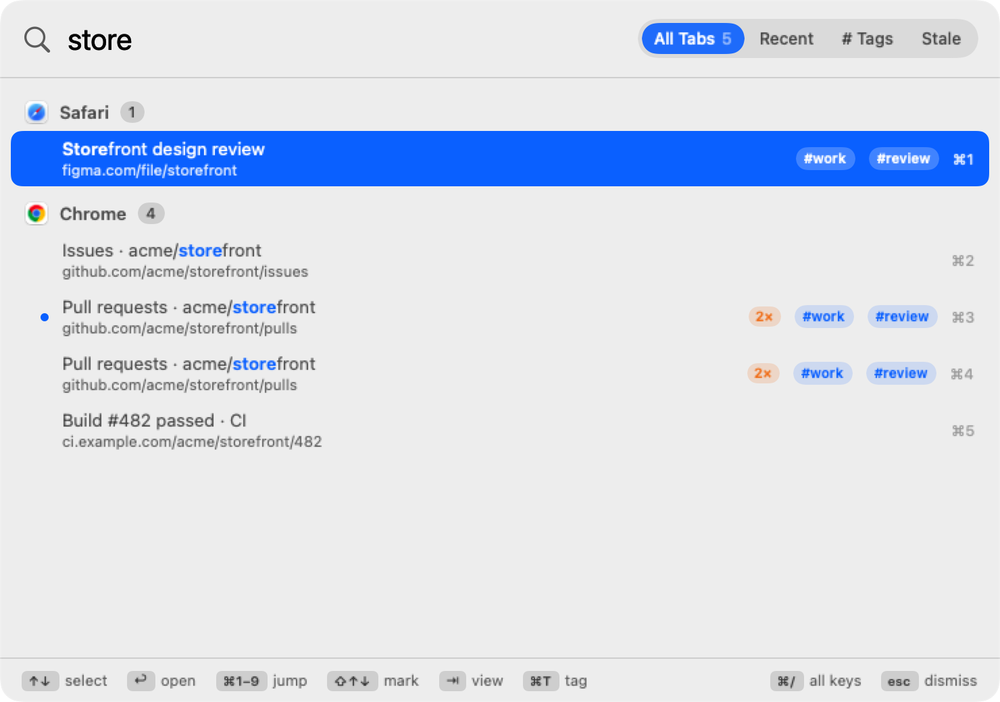

Every tab, every browser,
one keystroke away.
Press ⌥Space, type a few letters, hit ↩. BrowserSearch jumps straight to the tab in Chrome, Safari or Firefox, whichever window it's hiding in.



Three keys and you're there
No hunting through a row of tiny favicons or a stack of windows.
Summon
Press ⌥Space from any app. The panel opens on the screen you're looking at.
Type
A few letters of a title or address. Results narrow as you type, still grouped by browser.
Jump
↑ ↓ then ↩, or ⌘1–⌘9 directly. The right window comes forward with the tab selected.
Built for people with too many tabs
Everything is reachable from the keyboard, and nothing gets in your way.
Organized like your Mac
Tabs grouped by browser, then by window, with the tab each window is showing marked.
Fuzzy search
Titles and addresses. store, gh pull, or just initials: pr finds “Pull requests”.
Recent tabs new
A live, most-recently-used list across all browsers. Press ⇥ to switch to it.
Jump back
Open on Recent and the previous tab is preselected: shortcut, ↩, and you're back. Like ⌘⇥ for tabs.
Number keys
⌘1–⌘9 open the first nine results instantly. ⌘↑ ⌘↓ hop between browsers.
Tidy up
Close the selected tab with ⌘W without leaving the panel. Copy its address with ⌘C.
Reopen closed tabs
Tabs you closed stay in Recent; pick one to open it again in the same browser.
Never launches browsers
Only open browsers are searched. If only Chrome is running, only Chrome is searched.
Private by design
No network access, no analytics. Recent tabs are kept on your Mac and can be turned off or cleared.
Results narrow as you type
- Every word you type has to match, in any order.
- Exact text ranks first; matches near the start of a title beat those at the end.
- Results stay grouped by browser and window, best group first.
- Add a browser name to narrow it:
safari docs.
Your tab history, across browsers
- Newest first, with how long ago you used each tab.
- Updates on its own as you browse.
- Closed tabs can be reopened in one keystroke.
- Make it the default view in Settings for instant “jump back”.
Never touch the mouse
The bottom of the panel always shows these, so there's nothing to memorize.
Works with the browsers you use
Turn any of them off in Settings › Browsers.
| Browser | Search titles | Search addresses | Switch | Close with ⌘W |
|---|---|---|---|---|
| Google Chrome | ✓ | ✓ | ✓ | ✓ |
| Safari | ✓ | ✓ | ✓ | ✓ |
| Firefox | ✓ | — | ✓ | — |
Stop hunting for tabs
Set your shortcut, turn on Launch at login, and every tab is a keystroke away.
Read the getting-started guide